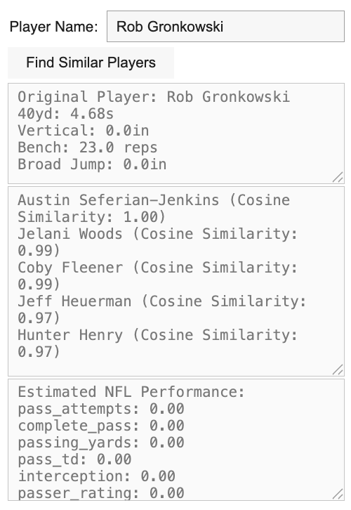
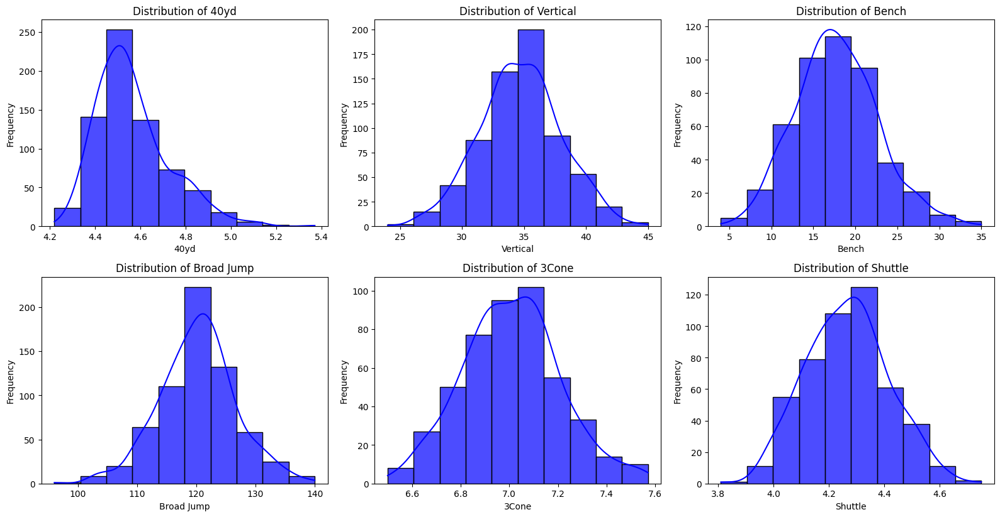
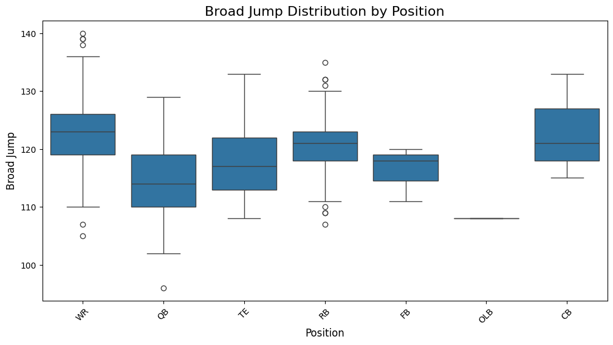
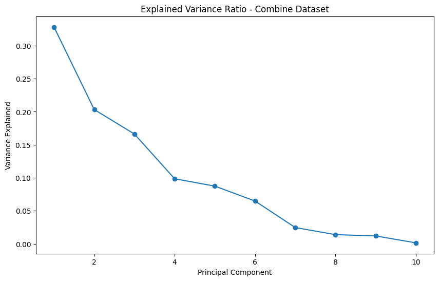

Sample Output of Similarity Calculator and Future Performance Prediction Tool

Exploratory Visualizations of NFL Combine Data

Exploratory Visualizations of NFL Data

Exploratory Visualizations of Data by NFL Positions

PCA Analysis